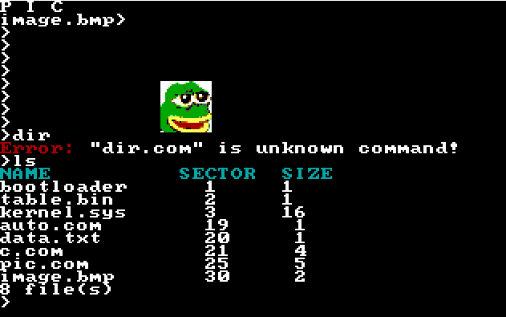

- Generated by
 1.9.1
1.9.1
|
Simple Operating System
|
Simple 16 bit operating system. My goal is to achive:
Documentation
All sectors in BIOS are counted from 1 and are 512B
Screenshot:

| Command | Description |
|---|---|
| $ | Execute program $.com, see Programs |
| cls | clear screen |
| pos | print cursor position |
| key | get information |
| mode $1 | change video mode to $1 |
| ls | Print files and their sizes |
| map | Show map of used sectors |
| rm $1 | Remove $1 file |
Programs installed on OS are in directory disk/
To call program.com with parameters enter "program parameters"
To add Your program to OS put .c file into directory disk/, it will be added as (your program name).com
Developers may use libraries in include/ and mustn't use anything in kernel/
Main function should have __start from types.h as attribute to be executed at first
0x20 is system IO interruption, see syscall() [it's masked in io.h]
0x21 is file system interruption, if error it will return negative value like errno see int0x21() [it's masked in file.h]
Program is loaded into address (CS+0x1000):0x100.
Bytes from (CS+0x1000):0 to (CS+0x1000):0xff are reserved for OS i.e:
If size of program is $ sectors size, then on $*200+100 bytes is stored automatic return subprogram, it is executed when program don't end on it's own